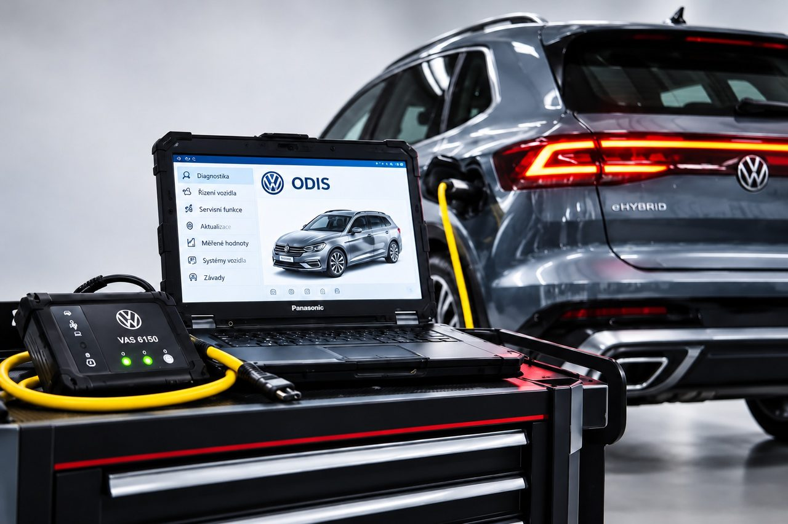

Service of hybrid and electric vehicles

J&S SERVIS in Statenice has been specializing in servicing and repairing vehicles of the Volkswagen Group – Volkswagen, Audi, Škoda, SEAT and CUPRA since 1994.
We provide professional maintenance, regular service inspections and diagnostics of hybrid (HEV), plug-in hybrid (PHEV) and purely electric vehicles (BEV) of the VW Group concern.
- Specializing in hybrids and electric cars
- Professional ODIS diagnostics
- Car service since 1994
Service and maintenance of electrified vehicles
- Regular service inspections according to the manufacturer's regulations.
- Inspection, maintenance and repair of mechanical parts of the brake system.
- Checking the chassis, suspension and steering.
- Service of air conditioning and related systems within the scope of the relevant equipment and service procedures.
- Inspection and maintenance of other common mechanical parts of the vehicle.
- Diagnostics of vehicle electronic systems using ODIS.
- Reading and evaluation of fault memories, measured values and operating parameters.
- Prescribed service and basic settings procedures according to the technical capabilities of a specific vehicle.
Specializing in VW Group models
We focus in particular on models Škoda Enyaq, Elroq, Octavia iV, Superb iV, Volkswagen ID.3, ID.4, ID.5, ID.7, Audi e-tron, Q4 e-tron and other hybrid and electric vehicles of the brands Volkswagen, Audi, Škoda, SEAT and CUPRA.
ODIS diagnostics
We use the ODIS diagnostic system to identify faults, check control units, evaluate measured values and perform available service functions.
The range of diagnostic and service operations depends on the model, equipment, technical condition and manufacturer's requirements.
Safety and scope of work
We follow the manufacturer's relevant service and safety procedures. High-voltage traction battery repairs and work on high-voltage components are not included in this offer.
Price of service work
Hourly rates for mechanical and electrical work on hybrid, plug-in hybrid and electric vehicles are in the service price list. Mechanical work is charged by model range; electrical work has a separate rate. Services with their own prices are charged under the relevant entry.
Spare parts, vehicle fluids and materials are charged separately. Services with their own price list, such as basic ODIS diagnostics or wheel alignment, are charged according to the relevant quotation. Before work begins, we inform the customer of the estimated costs.
Before booking
Air-conditioning and related thermal-management work is accepted only within a scope confirmed in advance for the specific vehicle. The stated exclusion of high-voltage battery repairs and work on high-voltage components also applies to these operations.